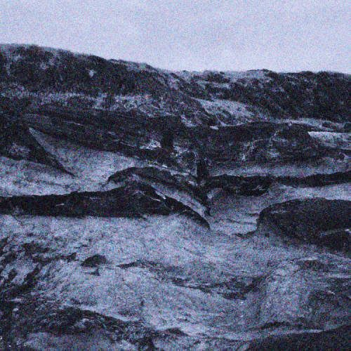

Ryotaro Ishihara
Gravity
2022 — album

tracklist
- Shijima
- Lux
- Fragmento
- Towards A
- Mass
- Toro, Pt.1
- News
- Interlude
- Gravity
- #6 Dream
- Circulation
listen
Available on various streaming services
credits
Released on May 2, 2022
Composed, performed, recorded and mixed by Ryotaro Ishihara
Artwork by Hatsune Itano